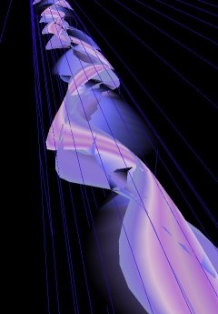
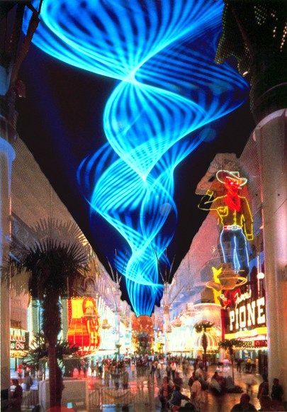
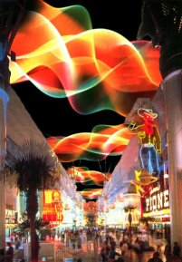
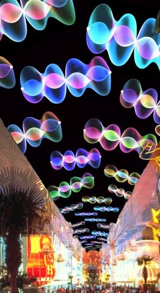

Proposal
for an Animation on the Worlds
Largest Lighting Display
The Fremont Street Experience is a street in the centre of Las Vegas which has been converted to a pedestrian precinct by building a long glass arch between the buildings from one side of the street to the other. Four blocks have been roofed over, a distance of about a third of a mile. Attached to the underside of the arch is a canopy of over two million lights, arranged to form a giant screen. Every hour throughout the evening there is a brief spectacular show.
The City of Las Vegas Arts Commission have called for light artists to make proposals for the design an animation. This is an extract from my proposal, together with the pictures I have submitted. PC users can download a 3D program, which shows what it might be like. On the right is a screen shot from the Vegas program. The waves are fully animated and you can control their colour and form and fly through the simulation. The down load is a 400 Kb self extracting zip file. This program was written in a hurry, it is not bug free. It cannot do any harm to your computer but it may crash. It will not alter your registry and can easily be deleted. It is only recommended for machines of 500 MHz or higher.
I propose an animation which simulates my kinetic light sculptures. The long canopy of lights over peoples heads is ideally shaped to display images depicting the luminous forms created by the spinning strings of my light sculptures. We are not limited to one gigantic string stretching the entire length of Fremont Street, although this will certainly be the most breathtaking of sights. We can simulate a handful, a hundred or a myriad of smaller strings, all whirling each in their own individual dance.

While physical light sculptures use chromastrobic light created by a system of computer controlled colour and shutter wheels spinning at high speed in front of high powered lights, for this proposal, the effects of chromastrobic light can be simulated and in so doing, a remarkable further development becomes possible. It has for a long time been my ambition that the colours of the chromastrobic lights should not be simply beautiful but convey information or tell a story in their own right. Now at last it is possible.
The story I wish to tell happens right here in Las Vegas under this canopy of lights. I call it The Kiss. If people do not know that there is a story being told, it does not matter, for them the animation will be like a firework display, but for those who want to know how the animation was structured, here is my story.
I imagine two people recognising each other from far away along the length of this extraordinary space: a man and a woman. They met before, but only fleetingly and long ago. Now at the sight of each other in this setting, they become carried away by their emotions. The colours of the display will be selected from the colours of our two protagonists and their surroundings. We can show first an overview, a confusing jumble of many movements, light and colour from the whole crowd milling around. Then by stages our selection becomes more specific, first identifying the two individuals, showing their full figures, then focussing in closer still on their faces. At each stage, the light and colours will be sampled and used to control the colours of the animation. As the man and woman come closer together, we sense their excitement at recognising each other, their haste to get closer as they push through the crowd. We show again the flashing colours of the scene around and then finally we focus on the fine detail. His eyes, as blue as a perfect sky, hers as dark as a tropical night, glinting with stars reflecting the many lights around her. Finally they come together and embrace. The moment of their kiss is the climax where we use the flesh tones of face and lips to colour the explosion of kinetic forms which bring this sequence to an end. 
At no time during the animation are the images of the two individuals ever shown, instead the qualities of light and colour from this scene form the palette for the light display. The story is told in the abstract, but the feelings will be strong. Like seeing the Northern Lights for the first time or listening to strange magical music, an evocative tune played in an unknown key. The actual music accompanying this light show will be provided by Laurie Spiegel, a friend and noted contemporary American composer. She is the founder of generative music, her compositions, based on computer algorithms she has developed, perfectly mirrors the abstract beauty of my light sculptures.
Home Page | New Art Gallery | New York | London | Manchester